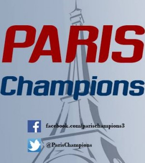

Actuellement en deuxième année de BTS Communication au CESACOM dans le 20e arrondissement de la capitale, je recherche du travail dans le but de pouvoir financer mon école ainsi que tout ce qui me coûte à côté: nutrition, logement, sorites, vacances etc...
Je suis blonde (mais parfois brune) tout dépend de mes humeurs mais ça fait quand même maintenant quelques temps que je suis restée de cette couleur ahah. Je vous fais des kiss et espère que vous m'aiderai dans cette galère parce que c'est pas facile tous les jours.
J'ai effectué un stage de 2 mois chez Paris Champions en tant que assistante chef de projet mais également en créa puisque ils ne disposaient pas de personne qui connaissaient les logiciels de PAO
De plus, j'ai effectué un stage chez OneCE une société de commercials usant de la patience des responsable des comité d'entreprise pour proposer leurs services.